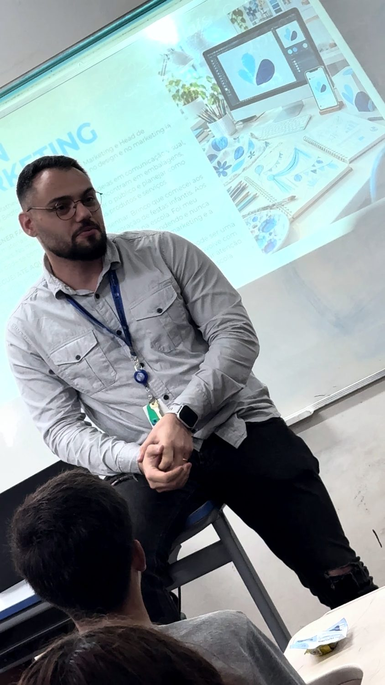

Workshop de 4 horas
Posicionamento e proposta de valor
Por que o cliente escolheria sua empresa?

Quando a empresa tenta atender todo mundo, a comunicação fica genérica. O cliente compara preço sem compreender escopo, especialidade ou diferença relevante.
Para quem faz sentido
Proprietários, gestores e profissionais de marketing de pequenos negócios, especialmente empresas de serviços.
Objetivo do trabalho
Construir uma hipótese de posicionamento e traduzi-la em uma mensagem comercial clara, apoiada nas evidências que o negócio consegue sustentar.
O que é abordado
- Público, usuário, influenciador e decisor: quem precisa compreender a oferta.
- Contexto de compra, problema, alternativas e critérios de escolha.
- Diferenciais verificáveis e coerência entre promessa e experiência.
- Proposta de valor e mensagem para site, apresentação, proposta ou atendimento.
- Teste de compreensão, registro de objeções e plano de validação inicial.
O que você desenvolve
- Delimitar público prioritário e situação de compra.
- Comparar a oferta com alternativas reais, inclusive fazer internamente ou adiar.
- Distinguir atributo, benefício e prova.
- Reescrever a mensagem e definir um teste de aplicação.
Como acontece
Exposições curtas alternadas com aplicação no negócio do participante. Um caso fictício abre o raciocínio; matrizes individuais, troca em pares e devolutivas orientadas ajudam a revisar decisões. O foco é clareza e coerência, não preferência estética.
Exercício prático
Cada participante escreve a mensagem atual, escolhe um público e relaciona duas promessas às suas provas. Um colega lê a nova mensagem sem explicação adicional e descreve o que entendeu. O autor revisa a ambiguidade e escolhe onde testar.
Agenda detalhada
| Atividade | Duração |
|---|---|
| Abertura e diagnóstico | 15 min |
| Público e situação de compra | 30 min |
| Alternativas e critérios | 35 min |
| Diferenciais, benefícios e provas | 35 min |
| Intervalo | 15 min |
| Proposta de valor e mensagem | 40 min |
| Teste em pares e revisão | 35 min |
| Experimento de 30 dias | 25 min |
| Avaliação e fechamento | 10 min |
| Total | 4h |
O que fica depois
- Mapa de público e contexto de compra.
- Matriz de alternativas, benefícios e evidências.
- Primeira versão da proposta de valor e mensagem comercial revisada.
- Experimento de 30 dias com responsável, sinal observado e data de revisão.
Como avaliamos
O material é revisado por cinco critérios: público específico, benefício compreensível, prova existente, mensagem clara e teste executável.
Como se preparar
Trazer uma oferta real ou ideia suficientemente delimitada e um exemplo de comunicação atual. Não exige conhecimento prévio de branding ou licença de software.
Fundamento aplicado
A lógica de segmentação, escolha de público e posicionamento orienta a decisão de quem atender e por que ser escolhido. A proposta de valor aproxima problema, benefício e evidência; não se resume a slogan.
Escopo bem definido
A entrega é uma hipótese estruturada para teste. Não inclui pesquisa representativa, criação de identidade visual, registro de marca ou validação definitiva de mercado.
A dinâmica pode ser adaptada ao setor e ao tamanho da turma. Necessidades de infraestrutura e acessibilidade são alinhadas antes da contratação.
Outros formatos
- Marketing e comercial integradosTreinamento com workshop de 4 horas. Do primeiro contato à próxima decisão.
- Plano de marketing 2027Workshop de 4 horas. Prioridades, orçamento e execução para uma equipe pequena.
- Sua empresa entrega valor. Sua marca consegue mostrar?Palestra participativa de 1 hora. Uma conversa prática sobre promessa, prova e experiência.
- Diagnóstico e plano de marketingConsultoria empresarial de 12 horas. Direção de marca e marketing para um negócio real.
Qual decisão precisa
ficar mais clara?
Conte o contexto, o público e o desafio. A proposta parte dessa conversa.